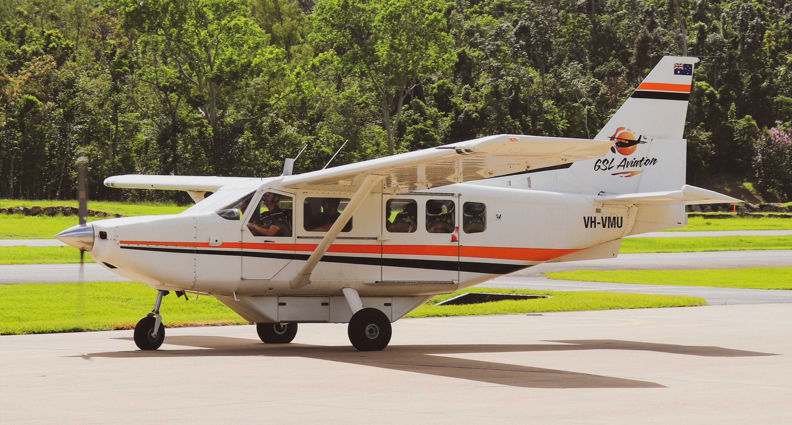

Traveling to the island can be done by:
- Most visitors arrive by small jets or propeller planes.
- Taniti is in the proces of expanding the current airport to accommodate for larger planes in the next few years.
- Other visitors arrive on small cruise ships that make port for one night per week.
Transportation on the island
- Taniti has public buses that serve the city from 5 a.m to 11 p.m.
- Private buses serve the rest of the island.
- Taxis and rental cars are also available.

Other forms of transportation
- Several local vendors rent out bikes and helmets to visitors.
- Helmets are required by law in Taniti.
- Taniti City is fairly falt and very walkable.